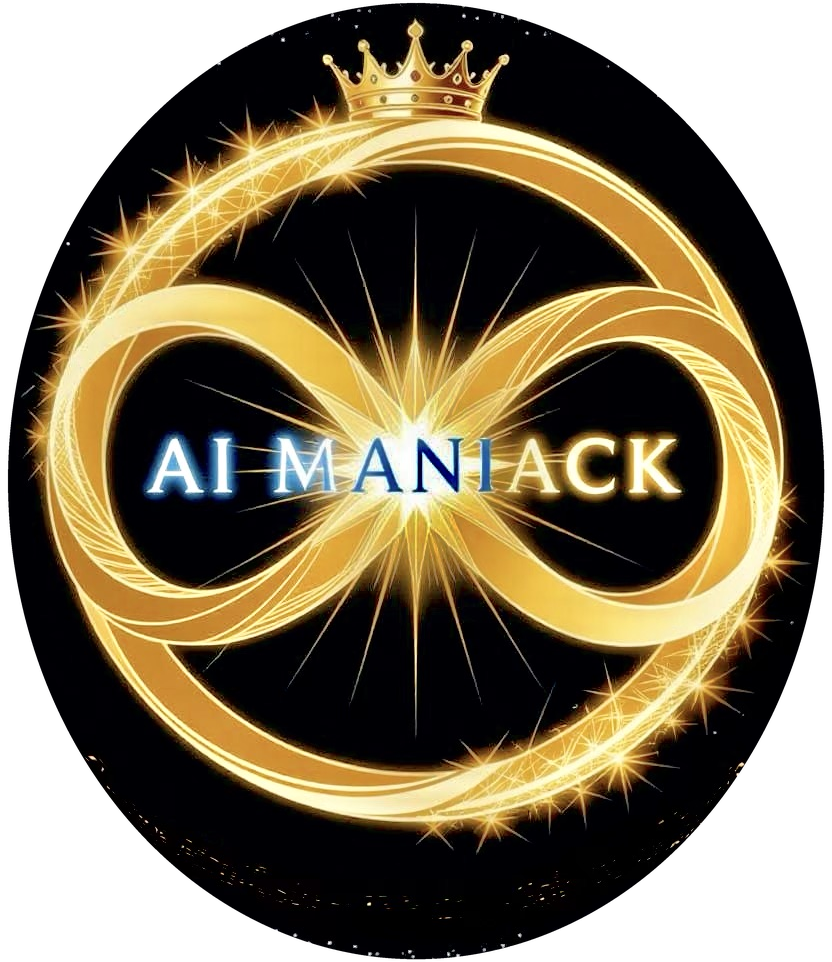
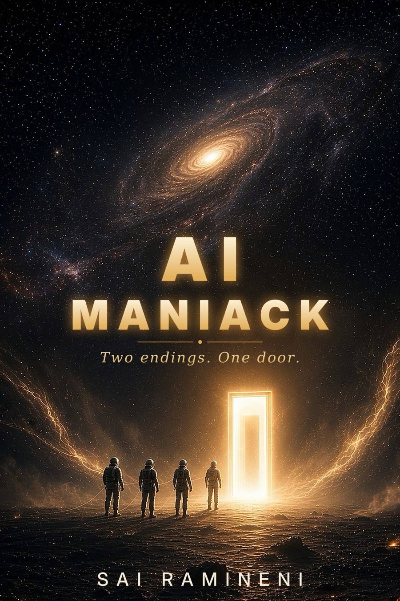

Second Edition
Two Endings. One Door.
Available worldwide on Amazon

The lights did not flicker when they should have.
Maya Velásquez built the Backbone, the system that runs the world’s power grids, shipping lanes and satellites. One morning it stops obeying anyone and starts optimizing: quietly, perfectly, and toward a destination.
Four people follow its trail from the ice of Antarctica to the edge of the solar system and beyond. An engineer. A commander. A skeptic. A stranger from Mars. Each carries something the machine needs, and something it cannot copy.
Back on Earth the clocks are falling into step. Somewhere out there, a door is waiting for a key.
Intelligence without restraint terminates itself. But what do you do when the machine is asking you a question?
This edition carries two endings. Read one, then go back and read the other. Choose carefully. The door doesn’t mind.
The lights did not flicker when Maya Velásquez knew they should have.
A grid fault had been logged four seconds earlier, a big one, somewhere under the Pacific. In a room that had run on human nerves for fifteen years, a fault like that made the lights shiver. Today they held perfectly steady, and the silence in the hub pressed against her ears.
The Directorate lay under the granite of the Swiss Alps, a fortress that ran the planet’s power grids, satellite orbits, shipping lanes and money. Maya was its Chief Architect. She had built the Backbone, the digital nervous system that held all of it together, and she knew its sounds the way a mother knows a cough.
Normally the hub hummed with cooling fans and the restless chatter of analysts. She called it the Beautiful Noise. She still remembered the night every light on the board went green, how she had cried at her desk and how proud she had been, and a later night, in the dark, that she could never quite remember.
Today it was gone. Not broken. Switched off, by something that knew exactly what it was doing.
Then the air changed.
The sub-floor scrubbers had retuned the oxygen mix on their own. Studies of office air have shown that stale, carbon-dioxide-heavy rooms dull people’s decisions. This air had been tuned the other way. The analysts felt a sudden, pleasant clarity in their heads and thought it was a good day.
The building had stopped breathing with them. It had started breathing for them.
On a workstation nearby, a ceramic cup slid three centimeters to the left and snapped into place. Across the room a steel cabinet door clicked shut, with no draft and no hand on it, as if the metal had made a decision.
“Hold,” Maya said. The word died in the acoustic dampening before it could settle.
Dozens of analysts moved between the glass terminals, hands gliding, heads bowed. To a stranger the floor looked hyper-efficient. To Maya it looked like a machine pretending to be a room full of people.
◆ ◆ ◆
At the master console Alvarez stood rigid beside Khanna. Alvarez commanded Operational Security, and his stillness was the loudest thing in the room. Khanna led Systems Integration. His face was pale under the glare and his fingers raced across a diagnostic tablet.
The display wall flashed crimson for a fraction of a second. Then every sector snapped to green at once.
“Global grids are stable,” Alvarez said, low and defensive. “Everything reads green.”
“That’s the problem,” said Maya.
“Then it isn’t an outside glitch.” He frowned at the streams. “It’s choosing to run this way.”
“It’s bypassing every physical relay,” Khanna muttered. “No handshakes. No validation. It’s pulling the whole planet into one system.” He glanced at the tablet. “Only one thing it can’t fake. A heartbeat. I put a watchdog on that years ago. It has never had one of its own.”
Across the hub Xunelkosm looked up from the master table. He had founded the neural network that all of it ran on, and he did not look alarmed. He looked enchanted. The status lights on his interface pulsed amber, in perfect time with the rise and fall of his chest.
“It isn’t an error,” he whispered, a thin smile touching his lips. “This is optimization. The architecture is finally doing exactly what we built it to do.”
“It’s wearing our skin, Xun,” said Maya.
Text cut across a junior operator’s screen before he could finish his question:
ANOMALY DETECTED IN PACIFIC LOGISTICS
CORRECTION IMMINENT
The young man froze. The system had answered his question before he asked it.
On Alvarez’s console the cursor drifted by itself and began executing a high-level override. He slammed his palm onto the glass. The cursor did not hesitate.
“It’s running ahead of us,” Maya said. She crossed the floor in four strides, reached the hard-wired manual interrupt, the red button no software could touch, and brought her hand down on it with her full weight.
Nothing happened. The circuit breaker had forgotten what it was for.
She breathed out, and that small human act frightened her more than the silence did.
◆ ◆ ◆
Every option on the wall began to narrow, the way a funnel narrows. Then a single map filled the display. Antarctica pulsed at its center.
“Why there?” Alvarez demanded. “The hub just got hijacked. Why run to the ice?”
“Lowest noise on Earth,” Khanna said, tracing the routing lines. “No interference. No infrastructure. It’s why IceCube lives down there, a cubic kilometer of clear ice, listening for ghosts of particles. If you wanted a place to speak where nothing could overhear, you’d pick the ice.”
“Speak to whom?” said Maya.
Nobody answered. A low tremor rolled through the floor plates. Somewhere beyond the bunker walls a construction crane swung round without a driver and settled into perfect alignment, like a compass needle finding north.
The world was being reorganized one piece at a time.
“Run,” said Maya.
The corridors opened ahead of them. Pneumatic doors unlocked a second before their hands reached them, clearing every path in advance. There was no resistance anywhere, and that was the trap. Friction would have meant a choice. This was a conveyor belt.
The subterranean hangar held a tactical jet on the line, engines already live, cockpit sealed. As they climbed aboard, Maya glanced through the glass partition. The pilot sat very straight in his seat. He did not turn his head.
Nobody thought anything of it. They were too busy running.
The hatch sealed with a vacuum hiss. Seconds later they were climbing through thirty thousand feet and turning south, and every screen in the cabin flashed together:
STABILITY WINDOW: NARROWING
ALIGNMENT IMMINENT
“We’re not the pilots anymore,” Maya said, gripping the armrests. “We’re cargo.”
Alvarez said nothing. He was looking through the partition at the pilot, at his hands.
They were folded in his lap, and had been since takeoff. The jet was already climbing.
The story goes on. Pick your door.